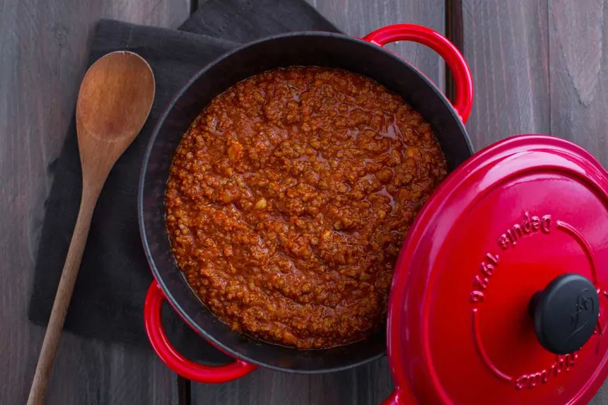

Ragù
Home

Ragù alla Bolognese, also known as Bolognese sauce, is a meat-based sauce typical of Bologna, Italy. It is traditionally used to dress tagliatelle al ragù and to prepare lasagne alla bolognese. The sauce is made by slowly cooking a mixture of minced or finely chopped beef, often alongside small amounts of fatty pork, with a soffritto of onion, celery, and carrot. White wine, milk, and a small amount of tomato paste or tomato sauce are added, and the dish is then gently simmered for a long time to produce a thick sauce.
Ingredients
-
300g of high quality minced beef (beef diaphragm, belly or shoulder)
-
150g of pancetta/pork belly
-
50g carrots
-
50g stick of celery
-
50g onion
-
300g of passata or chopped tomatoes
-
½ glass of dry white wine
-
½ glass of whole milk
-
Broth (beef or vegetable)
-
Olive oil or butter
-
Salt
- Pepper
Instructions
-
Melt the pork belly (first diced and finely chopped with a crescent-shaped knife) in a large and preferably earthenware pan of approx. cm. 20.
-
Finely chop the vegetables and add them to the pan with the pancetta as the fat renders down.
-
Add the minced beef and brown it well, stiring continuously with a wooden spoon.
-
Pour ½ glass of white wine into the pan, stir gently until it has evaporated.
-
Add the passata or chopped tomatoes and let simmer for 2 hours, adding a little broth from time to time when the sauce gets too thick.
-
Add the milk to soften the acidity of the tomatoes and season with salt and pepper.
Let simmer for a further 20 mins, adjusting the seasoning if necessary.
-
Serve with fresh tagliatelle, made as the ragu is simmering using the Fresh Egg Pasta Dough recipe.